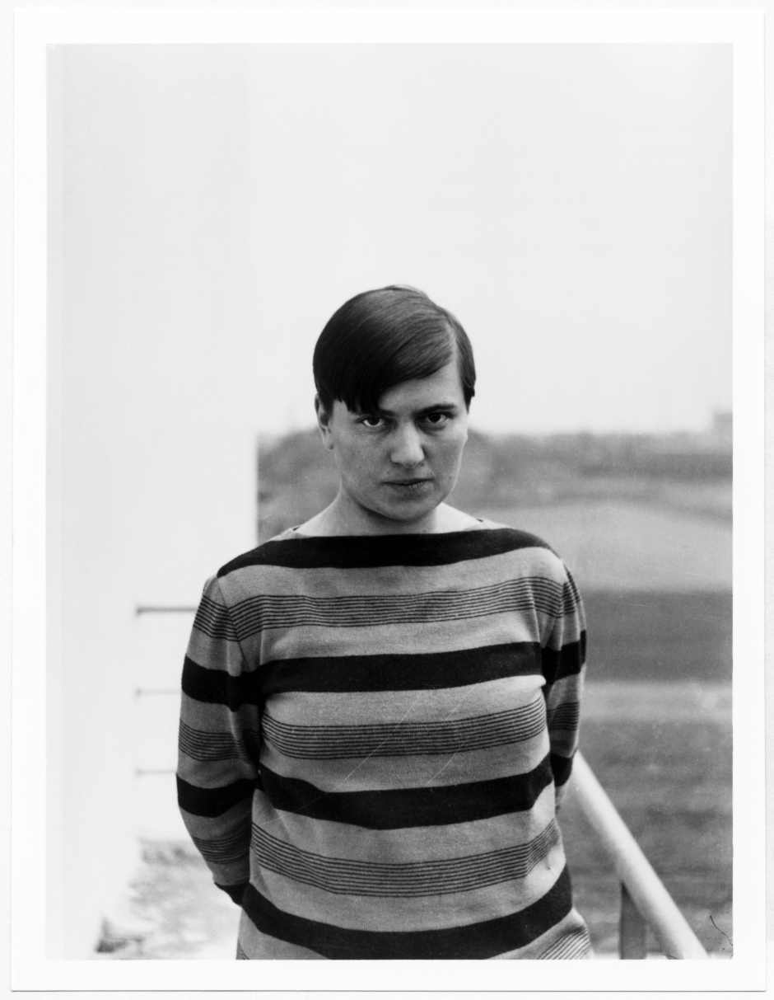

Los Maestros
Walter Gropius
Arquitecto y Fundador
Fundador de la Bauhaus, Gropius buscaba la unión de todas las artes bajo el primado de la arquitectura. Su visión era crear una nueva estética para la era industrial.
Ver BiografíaMarcel Breuer
Diseñador y Arquitecto
Conocido por su innovador uso del acero tubular en el diseño de muebles, como la icónica silla Wassily, Breuer fue una figura clave en el taller de mobiliario de la escuela.
Ver Biografía

Marianne Brandt
Diseñadora de Metales
Una de las pocas mujeres en el taller de metales, Brandt creó diseños de objetos cotidianos, como lámparas y teteras, que se han convertido en clásicos del diseño moderno.
Ver Biografía